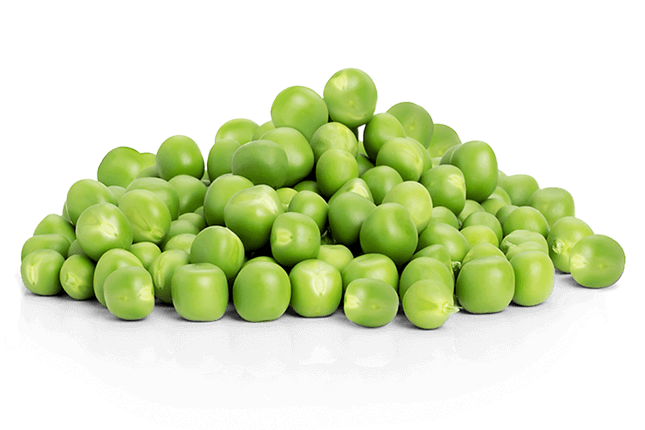
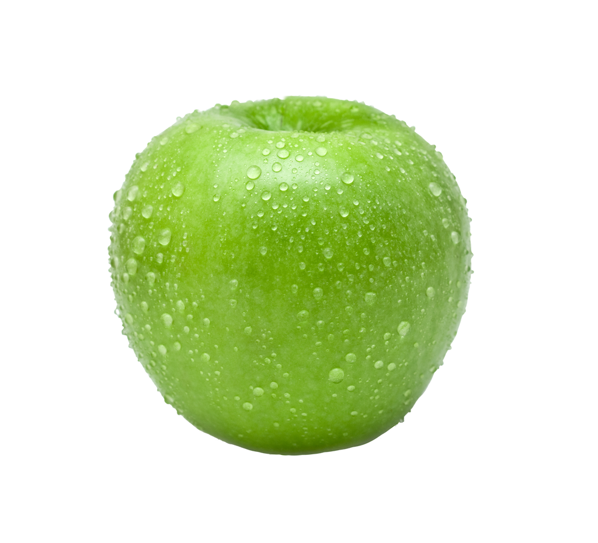

| Broccoli |
250 grams |
Broccoli is a fresh, green vegetable known for its crisp texture and mild, slightly sweet flavor. It’s packed with essential nutrients like vitamin C, vitamin K, fiber, and antioxidants, making it a popular choice for healthy meals. Whether steamed, stir-fried, or added to salads, broccoli is a versatile and nutritious addition to any diet. |
100% fresh broccoli, with no additives or preservatives. |
 |
| Carrots |
250 grams |
Carrots are vibrant orange root vegetables known for their natural sweetness and satisfying crunch. Rich in nutrients like beta-carotene, vitamin A, fiber, and antioxidants, carrots are a great addition to any healthy meal. Whether enjoyed raw, roasted, steamed, or blended into soups and juices, they bring both flavor and nutrition to your table. Loved for their versatility, carrots work well in both savory dishes and sweet treats. They’re a classic, everyday staple for anyone looking to add color and health to their plate. |
100% fresh carrots, with no additives or preservatives. |
|
| Lettuce |
250 grams |
Lettuce is a leafy green vegetable known for its light, crisp texture and refreshing, mild flavor. It's a staple in salads, sandwiches, and wraps, adding a fresh crunch to every bite. Packed with nutrients like vitamin A, vitamin K, fiber, and folate, lettuce is a healthy, low-calorie choice to complement any meal. Whether used as a base for salads or as a garnish, its versatility makes it a kitchen essential. Enjoy it fresh to get the most out of its natural taste and nutrients. |
100% fresh lettuce, with no additives or preservatives. |
 |
| Green Peas |
250 grams |
Green Peas are small, round, and tender legumes known for their slightly sweet flavor and soft texture. They are a nutritious addition to meals, providing a boost of protein, fiber, vitamin C, and iron, which support energy and overall health. Whether added to stir-fries, soups, pastas, or served as a side dish, green peas bring both flavor and nourishment. Their bright green color and mild taste make them a versatile ingredient in both savory dishes and salads. Enjoy them fresh, steamed, or sautéed for a simple, healthy option. |
100% fresh green peas, with no additives or preservatives. |
 |
| Bell Pepper |
250 grams |
Bell Pepper is a crisp, juicy vegetable known for its sweet, mild flavor and vibrant colors like red, green, yellow, and orange. It’s a rich source of vitamin C, vitamin A, fiber, and antioxidants, making it a healthy and flavorful addition to any meal. Whether eaten raw in salads, roasted, stir-fried, or stuffed, bell peppers add a fresh, crunchy texture to your dishes. Their natural sweetness and bright color make them a favorite in both everyday cooking and special recipes. Bell peppers are perfect for adding a nutritious boost to any plate. |
100% fresh bell pepper, with no additives or preservatives. |
 |
| Green Apple |
150 grams |
Green Apple is a crisp, juicy fruit known for its tart, slightly sweet flavor and refreshing crunch. It's loaded with essential nutrients like vitamin C, fiber, and powerful antioxidants, making it a perfect snack for boosting immunity and supporting digestion. Green apples are great enjoyed fresh, sliced into salads, or blended into smoothies for a tangy twist. Their bright green skin and firm texture make them as visually appealing as they are delicious. Whether as a snack or part of a meal, green apples are a healthy and satisfying choice. |
100% fresh green apple, with no additives or preservatives. |
 |
| Dragon Fruit |
300 grams |
Dragon Fruit is an exotic, vibrant fruit known for its mildly sweet flavor and unique, speckled flesh. Rich in vitamin C, fiber, antioxidants, and magnesium, dragon fruit supports a healthy immune system and aids digestion while offering a refreshing, tropical taste. Whether enjoyed on its own, blended into smoothies, or added to fruit salads, it’s a delicious and nutritious way to brighten up any meal. Its striking pink skin and white or red pulp make it as beautiful as it is healthy. Dragon fruit is a perfect balance of taste and wellness in every bite. |
100% fresh dragon fruit, with no additives or preservatives. |
|
| Peach |
150 grams |
Peach is a soft, juicy fruit known for its sweet, fragrant flavor and velvety skin. Packed with vitamin C, vitamin A, fiber, and antioxidants, peaches help support healthy skin, boost the immune system, and aid digestion. Whether eaten fresh, added to desserts, blended into smoothies, or tossed into salads, peaches bring a natural sweetness to any dish. Their vibrant color and juicy bite make them a favorite during warm seasons. Enjoy them chilled for a refreshing, healthy treat. |
100% fresh peach, with no additives or preservatives. |
|
| Green Grapes |
250 grams |
Grapes are small, juicy fruits known for their natural sweetness and burst of refreshing flavor. They are rich in vitamin C, vitamin K, antioxidants, and fiber, making them a healthy choice for boosting immunity and supporting heart health. Perfect as a snack on their own, grapes also pair well with salads, desserts, and cheese platters. With their smooth skin and tender flesh, grapes are a convenient, bite-sized fruit enjoyed any time of the day. Whether chilled or fresh from the market, grapes offer a delicious, nutritious boost. |
100% fresh grapes, with no additives or preservatives. |
 |
| Strawberry |
250 grams |
Strawberry is a bright red, juicy fruit known for its sweet, slightly tangy flavor and fragrant aroma. Loaded with vitamin C, antioxidants, fiber, and manganese, strawberries help strengthen the immune system, support skin health, and aid digestion. Whether enjoyed fresh, blended into smoothies, added to desserts, or tossed into salads, strawberries add a burst of natural sweetness to any dish. Their vibrant color and refreshing taste make them a favorite fruit for all ages. Best served chilled for the perfect healthy snack. |
100% fresh strawberries, with no additives or preservatives. |
 |